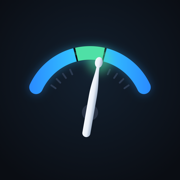

Privacy Policy
Effective November 16, 2026
The short version: Feel Meter does not collect any personal data. Everything it hears and saves stays on your device. There are no accounts, no ads, no analytics and no tracking, and the app does not connect to the internet.
Who we are
Feel Meter is made by SYNACT LLC, 6655 Jackson Road, Unit 206, Ann Arbor, Michigan 48103, USA. In this policy, "we" means SYNACT LLC.
The microphone
Feel Meter asks for the microphone so it can hear your drums and show whether you rush or drag. It listens only while you calibrate, play or sync the click to a song. The sound is analyzed on your device as you play, and no audio is recorded or saved. Calibration keeps only a short numeric profile of how your drums sound. What the microphone hears is never sent to us or to anyone else.
You can turn the microphone off at any time in Settings, Privacy & Security, Microphone. Without it, Feel Meter still plays the click but cannot show your timing.
What stays on your device
- Your settings, such as tempo, click sound and practice options.
- Your kit or pad calibration.
- Your take history and scores.
This data stays on your device. We never receive it. Like other app data, it is part of your device backups (iCloud or your computer) if you have backups turned on. Deleting Feel Meter deletes all of it.
Spoken bar numbers
When Feel Meter counts bars out loud, the words are made by the speech voice built into your device. This happens on the device.
What we do not do
- The app does not collect your name, email, location, contacts or any other personal information.
- We do not use analytics, advertising or tracking tools, and we do not share or sell data.
- Feel Meter has no accounts and no sign-in.
Apple
Apple handles your purchase. If you chose to share analytics with app developers in your device settings, Apple may give us anonymous crash and usage reports. We cannot identify you from them. Apple's own privacy policy covers what Apple collects.
Your rights
Because we hold no personal data from the app, there is nothing for us to access, correct or delete. If you email us, write to us and we will delete your messages. We do not sell or share personal information.
Children
Feel Meter collects no personal data from anyone, including children under 13. It is suitable for all ages.
Changes
If this policy changes, we will update this page and its effective date. If Feel Meter ever starts to collect or send any data, we will say so here and in the app before it does.
Contact
Questions about privacy: synactllc@gmail.com
If you email us, we get your email address and whatever you send. We use it only to answer you and delete it on request.